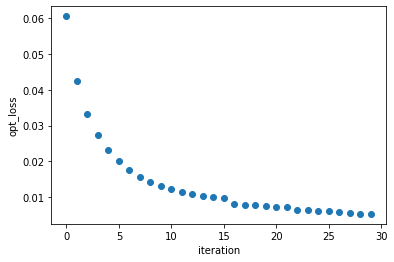

学習過程の可視化#
ここではチュートリアルで扱ったQNNClassifierとQNNRegressorにおいて、学習経過に従って学習が実際に進んでいく様子を可視化する.
まずインストールを行う.
!pip install skqulacs
!pip install qulacsvis
!pip install tqdm
DEPRECATION: Configuring installation scheme with distutils config files is deprecated and will no longer work in the near future. If you are using a Homebrew or Linuxbrew Python, please see discussion at https://github.com/Homebrew/homebrew-core/issues/76621
Requirement already satisfied: skqulacs in /usr/local/lib/python3.9/site-packages (0.4.1)
Requirement already satisfied: qulacs<0.6.0,>=0.5.0 in /usr/local/lib/python3.9/site-packages (from skqulacs) (0.5.3)
Requirement already satisfied: scipy<1.8.0,>=1.7.0 in /usr/local/lib/python3.9/site-packages (from skqulacs) (1.7.3)
Requirement already satisfied: scikit-learn<2.0.0,>=1.0.0 in /usr/local/lib/python3.9/site-packages (from skqulacs) (1.2.0)
Requirement already satisfied: numpy<1.22.0,>=1.21.0 in /usr/local/lib/python3.9/site-packages (from skqulacs) (1.21.6)
Requirement already satisfied: typing-extensions<5.0.0,>=4.3.0 in /usr/local/lib/python3.9/site-packages (from skqulacs) (4.4.0)
Requirement already satisfied: joblib>=1.1.1 in /usr/local/lib/python3.9/site-packages (from scikit-learn<2.0.0,>=1.0.0->skqulacs) (1.2.0)
Requirement already satisfied: threadpoolctl>=2.0.0 in /usr/local/lib/python3.9/site-packages (from scikit-learn<2.0.0,>=1.0.0->skqulacs) (3.1.0)
DEPRECATION: Configuring installation scheme with distutils config files is deprecated and will no longer work in the near future. If you are using a Homebrew or Linuxbrew Python, please see discussion at https://github.com/Homebrew/homebrew-core/issues/76621
[notice] A new release of pip available: 22.1.2 -> 22.3.1
[notice] To update, run: python3.9 -m pip install --upgrade pip
DEPRECATION: Configuring installation scheme with distutils config files is deprecated and will no longer work in the near future. If you are using a Homebrew or Linuxbrew Python, please see discussion at https://github.com/Homebrew/homebrew-core/issues/76621
Requirement already satisfied: qulacsvis in /usr/local/lib/python3.9/site-packages (0.5.0)
Requirement already satisfied: dataclasses-json<0.6.0,>=0.5.7 in /usr/local/lib/python3.9/site-packages (from qulacsvis) (0.5.7)
Requirement already satisfied: numpy<1.22.0,>=1.21.0 in /usr/local/lib/python3.9/site-packages (from qulacsvis) (1.21.6)
Requirement already satisfied: matplotlib<4.0.0,>=3.4.3 in /usr/local/lib/python3.9/site-packages (from qulacsvis) (3.5.2)
Requirement already satisfied: scipy<1.8.0,>=1.7.0 in /usr/local/lib/python3.9/site-packages (from qulacsvis) (1.7.3)
Requirement already satisfied: Pillow<10.0.0,>=9.1.0 in /usr/local/lib/python3.9/site-packages (from qulacsvis) (9.2.0)
Requirement already satisfied: temp<2021.0.0,>=2020.7.2 in /usr/local/lib/python3.9/site-packages (from qulacsvis) (2020.7.2)
Requirement already satisfied: Qulacs>=0.5.0 in /usr/local/lib/python3.9/site-packages (from qulacsvis) (0.5.3)
Requirement already satisfied: marshmallow<4.0.0,>=3.3.0 in /usr/local/lib/python3.9/site-packages (from dataclasses-json<0.6.0,>=0.5.7->qulacsvis) (3.19.0)
Requirement already satisfied: typing-inspect>=0.4.0 in /usr/local/lib/python3.9/site-packages (from dataclasses-json<0.6.0,>=0.5.7->qulacsvis) (0.8.0)
Requirement already satisfied: marshmallow-enum<2.0.0,>=1.5.1 in /usr/local/lib/python3.9/site-packages (from dataclasses-json<0.6.0,>=0.5.7->qulacsvis) (1.5.1)
Requirement already satisfied: kiwisolver>=1.0.1 in /usr/local/lib/python3.9/site-packages (from matplotlib<4.0.0,>=3.4.3->qulacsvis) (1.4.3)
Requirement already satisfied: fonttools>=4.22.0 in /usr/local/lib/python3.9/site-packages (from matplotlib<4.0.0,>=3.4.3->qulacsvis) (4.34.4)
Requirement already satisfied: packaging>=20.0 in /usr/local/lib/python3.9/site-packages (from matplotlib<4.0.0,>=3.4.3->qulacsvis) (21.3)
Requirement already satisfied: python-dateutil>=2.7 in /usr/local/lib/python3.9/site-packages (from matplotlib<4.0.0,>=3.4.3->qulacsvis) (2.8.2)
Requirement already satisfied: cycler>=0.10 in /usr/local/lib/python3.9/site-packages (from matplotlib<4.0.0,>=3.4.3->qulacsvis) (0.11.0)
Requirement already satisfied: pyparsing>=2.2.1 in /usr/local/lib/python3.9/site-packages (from matplotlib<4.0.0,>=3.4.3->qulacsvis) (3.0.9)
Requirement already satisfied: six>=1.5 in /usr/local/lib/python3.9/site-packages (from python-dateutil>=2.7->matplotlib<4.0.0,>=3.4.3->qulacsvis) (1.16.0)
Requirement already satisfied: typing-extensions>=3.7.4 in /usr/local/lib/python3.9/site-packages (from typing-inspect>=0.4.0->dataclasses-json<0.6.0,>=0.5.7->qulacsvis) (4.4.0)
Requirement already satisfied: mypy-extensions>=0.3.0 in /usr/local/lib/python3.9/site-packages (from typing-inspect>=0.4.0->dataclasses-json<0.6.0,>=0.5.7->qulacsvis) (0.4.3)
DEPRECATION: Configuring installation scheme with distutils config files is deprecated and will no longer work in the near future. If you are using a Homebrew or Linuxbrew Python, please see discussion at https://github.com/Homebrew/homebrew-core/issues/76621
[notice] A new release of pip available: 22.1.2 -> 22.3.1
[notice] To update, run: python3.9 -m pip install --upgrade pip
DEPRECATION: Configuring installation scheme with distutils config files is deprecated and will no longer work in the near future. If you are using a Homebrew or Linuxbrew Python, please see discussion at https://github.com/Homebrew/homebrew-core/issues/76621
Requirement already satisfied: tqdm in /usr/local/lib/python3.9/site-packages (4.64.1)
DEPRECATION: Configuring installation scheme with distutils config files is deprecated and will no longer work in the near future. If you are using a Homebrew or Linuxbrew Python, please see discussion at https://github.com/Homebrew/homebrew-core/issues/76621
[notice] A new release of pip available: 22.1.2 -> 22.3.1
[notice] To update, run: python3.9 -m pip install --upgrade pip
skqulacs.qnn.QNNClassifierについて学習過程の可視化#
データを用意する.
from sklearn import datasets
iris = datasets.load_iris()
X = iris.data
T = iris.target
訓練データとテストデータに分ける.
from sklearn.model_selection import train_test_split
import numpy as np
np.random.seed(0) # 乱数初期化を固定値に
train_x, test_x, train_t, test_t = train_test_split(X, T, train_size=0.8, test_size=0.2)
len(train_x), len(test_x), len(train_t), len(test_t) # サイズ表示
(120, 30, 120, 30)
訓練データをバッチに分ける.
batch_size = 4
batched_train_x_list = np.array_split(train_x, batch_size)
batched_train_t_list = np.array_split(train_t, batch_size)
量子回路を用意する.
from skqulacs.circuit.pre_defined import create_qcl_ansatz
from skqulacs.qnn import QNNClassifier
from skqulacs.qnn.solver import Bfgs
nqubit = 5 # qubitの数。必要とする入力、出力の次元数以上が必要である。
c_depth = 3 # circuitの深さ。ニューラルネットワークでの隠れ層に対応する。
time_step = 1. # qcl_ansatz に必要となるパラメータ。横磁場イジングモデルによって発展させる時間を決める。
num_class = 3 # 分類数（ここでは3つの品種に分類）
solver = Bfgs() # アルゴリズム。ほかには、`Adam()` や `NelderMead()` が使える。
maxiter = 100 # ループの最大。これが多いほど、正確になるが、時間がかかる。
circuit = create_qcl_ansatz(nqubit, c_depth, time_step) # LearningCircuitを作る
qcl = QNNClassifier(circuit, num_class, solver) # モデル構築を行う
#opt_loss, opt_params = qcl.fit(x_train, y_train, maxiter)
各エポックの学習が終わるごとにf1 scoreを出力する.
from tqdm import tqdm
from sklearn.metrics import f1_score
epoch = 5
opt_loss = [[0 for i in range(batch_size)] for i in range(epoch)]
for i in (range(epoch)):
print("epoch", (i + 1))
for j in tqdm(range(batch_size)):
one_batch_train = batched_train_x_list[j]
one_batch_test = batched_train_t_list[j]
qcl.fit(one_batch_train, one_batch_test, maxiter)
y_pred = qcl.predict(test_x)
print("f1 score", f1_score(test_t, y_pred, average="weighted"))
epoch 1
100%|██████████| 4/4 [00:37<00:00, 9.33s/it]
f1 score 0.8885057471264368
epoch 2
100%|██████████| 4/4 [00:35<00:00, 8.86s/it]
f1 score 0.8885057471264368
epoch 3
100%|██████████| 4/4 [00:33<00:00, 8.44s/it]
f1 score 0.8885057471264368
epoch 4
100%|██████████| 4/4 [00:35<00:00, 8.82s/it]
f1 score 0.8885057471264368
epoch 5
100%|██████████| 4/4 [00:36<00:00, 9.01s/it]
f1 score 0.8885057471264368
skqulacs.qnn.QNNRegressorの学習過程の可視化#
データの生成を行う.
import numpy as np
from numpy.random import default_rng
def generate_noisy_sine(x_min, x_max, num_x):
rng = default_rng(0)
x_train = [[rng.uniform(x_min, x_max)] for _ in range(num_x)]
y_train = [np.sin(np.pi*x[0]) for x in x_train]
mag_noise = 0.01
y_train += mag_noise * rng.random(num_x)
return np.array(x_train), np.array(y_train)
x_min = -1.0
x_max = 1.0
num_x = 80
x_train, y_train = generate_noisy_sine(x_min, x_max, num_x)
x_test, y_test = generate_noisy_sine(x_min, x_max, num_x)
量子回路を用意する. 学習の経過を可視化するために以下ではmaxiterを1にしており, 学習の効率自体はチュートリアルの時のものより下がっている.
from skqulacs.qnn import QNNRegressor
n_qubit = 4
depth = 6
time_step = 0.5
solver = Bfgs()
maxiter= 1
circuit = create_qcl_ansatz(n_qubit, depth, time_step, 0)
qnn = QNNRegressor(circuit, solver)
iteration_num = 30 #iterationの回数
iterations = [i for i in range(iteration_num)] #回数
loss_values = [0 for i in range(iteration_num)] #opt_loss
for i in range(iteration_num):
opt_loss, params_after = qnn.fit(x_train, y_train, maxiter)
loss_values[i] = opt_loss
学習の経過に従って, 損失関数の値が減少していくことを描画する.
import matplotlib.pyplot as plt
plt.plot(iterations, loss_values, "o")
plt.xlabel("iteration")
plt.ylabel("opt_loss")
plt.show()
